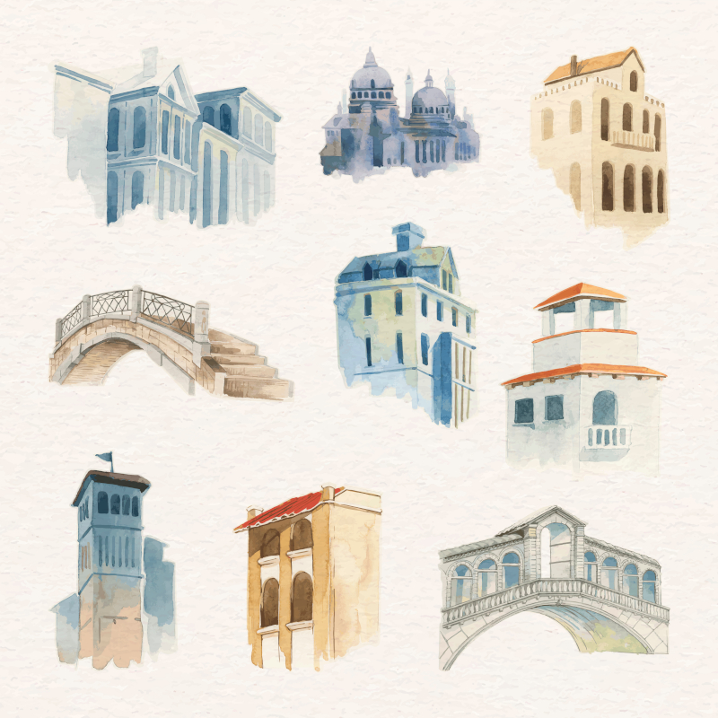

Lucas é um jovem de 18 anos que gosta de artes, um passatempo que herdou de seu falecido pai.
Toda manhã, ele vai para seu colégio, trabalha durante a tarde, e ao chegar em casa, realiza as atividades e estudos do colégio, desenhando de vez em quando.
Ele pensa em fazer alguma faculdade relacionada a artes, mas não sabe se vai bem, já que tem desenhado menos nos últimos anos.
Lucas quer tentar entrar em uma faculdade de artes, mesmo que dê errado.
Sua mãe diz para ele entrar em uma faculdade de engenharia, pois ele é bom em cálculos.
O que Lucas deveria fazer?